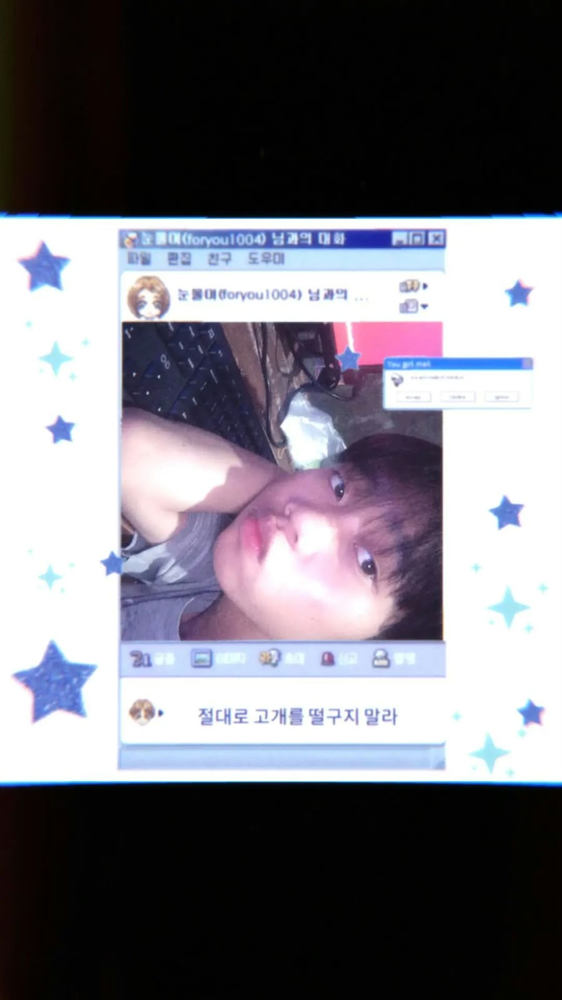

Tools yang sedang kupakai
Godot Engine
Aku sedang belajar membuat game 2D versi simpel—mulai dari menggerakkan karakter sampai merancang level kecil yang bisa dimainkan.
Belajar sambil mencobaสวัสดีครับ , ยินดีที่ได้รู้จัก
Teman-teman biasa memanggilku Mangir. Sedang otodidak bahasa thailand dan mandarin.

Sedikit tentang diriku
สวัสดีครับทุกคน! Phom chue Mangir Danumoyo Prasetyo Wening, biasanya dipanggil Mangir. Aku berusia 16 tahun dan tinggal di Jakarta, Indonesia.
Di waktu luang, aku suka Bermain Game, Study Bahasa thai dan Mandarin, serta musik, dan aku sedang berfokus dengan semua hal itu. Teman-teman. mengenalku sebagai pribadi yang Baik,Sabar,Mudah berteman dan beradaptasi..
Aku percaya setiap orang punya cerita dan cara sendiri untuk melihat dunia. Halaman ini adalah kumpulan kecil dari hal-hal yang kusukai—mulai dari tontonan, musik, sampai sesuatu yang sedang kupelajari.
Potongan kecil dari ku
Cerita, karakter, dan nada yang selalu punya tempat tersendiri.
Series yang cinta bangett gueh.
Film-film yang masih teringat selalu ada didalam benakku.
Lagu yang selalu ku putar dimanapun dan kapanpun.
Sedang kupelajari
Bukan daftar panjang—hanya satu hal yang sedang membuatku penasaran.
Tools yang sedang kupakai
Aku sedang belajar membuat game 2D versi simpel—mulai dari menggerakkan karakter sampai merancang level kecil yang bisa dimainkan.
Belajar sambil mencobaYang sedang kubuat
 cuplikan kecil dari proses belajarku
cuplikan kecil dari proses belajarku
Game ini dimainkan dengan cara menggeser karakter di layar dan harus tidak terkena musuh saat berjalan. Project ini bercerita tentang Game ini dibuat saat kelas 10 semester 2. Aku membuatnya sebagai project sekolah sambil belajar mencoba ide dan menyelesaikan game kecilku sendiri.
เจอกันนะ
Punya ide project, ingin membuat sesuatu bersama, atau sekadar ingin menyapa? Hubungi aku lewat email atau WhatsApp.